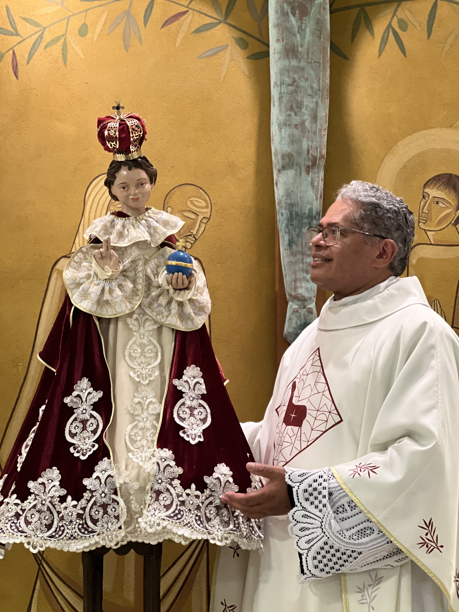

A Devoção ao Menino Jesus de Praga:
O Deus que se faz pequeno para nos salvar
A devoção ao Menino Jesus de Praga nasce do coração da fé cristã e está profundamente enraizada no Mistério da Encarnação do Verbo. Ao contemplarmos o Menino Jesus, somos conduzidos ao centro do Evangelho: o Deus eterno que, por amor, se fez criança, assumindo nossa fragilidade para nos comunicar sua vida divina. Na imagem do Menino Jesus de Praga, a Igreja reconhece a expressão visível de um amor infinito que se manifesta na pequenez.
Origem e história da devoção
A imagem do Menino Jesus de Praga tem sua origem no século XVI. Trata-se de uma pequena estátua do Menino Jesus, provavelmente esculpida na Espanha, que chegou à cidade de Praga por meio da nobreza católica. Em 1628, a imagem foi confiada aos Padres Carmelitas Descalços do convento de Nossa Senhora da Vitória, em Praga.
Em um período marcado por guerras, pobreza e instabilidade religiosa, a imagem foi esquecida e até danificada. Segundo a tradição, ao ser redescoberta, o Menino Jesus teria dito a um dos religiosos:
“Tende piedade de mim, e eu terei piedade de vós. Restituí-me as mãos, e eu vos concederei a paz.”
Após a restauração da imagem, muitos fiéis começaram a experimentar graças espirituais e materiais, e a devoção se espalhou rapidamente por toda a Europa e, depois, pelo mundo inteiro. O Menino Jesus de Praga passou a ser reconhecido como sinal da providência divina, especialmente para aqueles que confiam com simplicidade e fé.
A imagem do Menino Jesus de Praga apresenta uma profunda catequese visual. O Menino veste trajes reais, trazendo na mão esquerda o globo encimado pela cruz, símbolo de que Cristo, mesmo na infância, é Rei do Universo. A mão direita erguida em gesto de bênção recorda que toda graça procede dele.
Esta devoção nos ensina que o Cristo não reina pela força, mas pelo amor. Como afirma São Paulo:
“Sendo de condição divina, esvaziou-se a si mesmo, assumindo a condição de servo” (Fl 2,6-7).
A devoção ao Menino Jesus de Praga nos convida a viver a espiritualidade da confiança filial, da entrega humilde e da certeza de que Deus cuida de seus filhos. Santa Teresinha do Menino Jesus expressou esta verdade ao afirmar que o caminho espiritual passa pela pequenez e pela confiança absoluta na misericórdia divina.
O Catecismo da Igreja Católica recorda que “a Encarnação é o mistério da admirável união da natureza divina e da natureza humana na única Pessoa do Verbo” (cf. CIC, 464). Contemplar o Menino Jesus é, portanto, contemplar este mistério e permitir que ele transforme nosso modo de viver, amar e servir.
A devoção ao Menino Jesus de Praga não se reduz a um pedido de graças, mas conduz a uma vida cristã mais profunda, marcada pela oração, pela caridade e pela confiança em Deus. Aqueles que se aproximam do Menino Jesus são chamados a refletir, com a própria vida, a ternura, a simplicidade e o amor do próprio Cristo.
Em nossa paróquia, essa devoção é um convite constante a acolher o Cristo que se faz pequeno, especialmente nos mais frágeis, pobres e esquecidos. Ao honrarmos o Menino Jesus de Praga, renovamos nossa fé na providência divina e nossa disposição de sermos instrumentos do amor de Deus no mundo.
Oração ao Menino Jesus de Praga
Ó Menino Jesus de Praga, Verbo eterno do Pai feito criança por amor, nós vos adoramos e bendizemos. Vós sois o Rei do céu e da terra, mas escolhestes a pequenez para nos ensinar o caminho da salvação. Colocamos diante de vós nossas necessidades, nossas alegrias e sofrimentos, confiantes de que nada escapa ao vosso olhar misericordioso. Aumentai em nossos corações a fé, a esperança e a caridade. Ensinai-nos a viver como verdadeiros filhos de Deus, com humildade, confiança e amor. Abençoai nossas famílias, nossa paróquia e todos aqueles que recorrem a vós com sincero coração.Menino Jesus de Praga, nós confiamos em vós.
Reinai em nossos corações, hoje e sempre. Amém.
